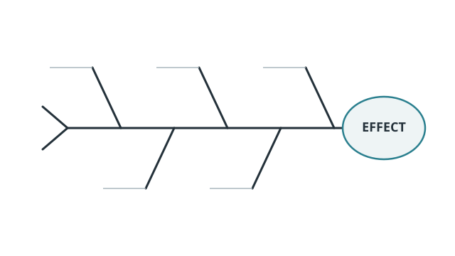

/
Graphic Organizers & Visual Thinking
Choose the thinking job first, then the organizer. Every entry explains when it helps, when it does not, how to run it, and includes original classroom-ready printables where useful.

No matches.
Try a strategy name, classroom purpose, group size, or reset the filters.